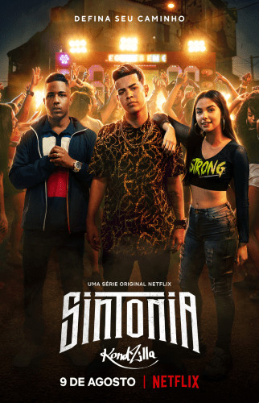

Crítica:
A série se passa na periferia tendo três protagonistas que são amigos confidentes, desde infância, Doni, Rita e Nando são que iram mostrar na série um pouco da realidade vivida por jovens nas favelas brasileira. Mesmo que à primeira vista você ache que a história seja baseada apenas em funk a narrativa traz outros temas também. Os três jovens estão começados a crescer por conta disso começam a se distanciar, e é aí que começa os novos rumos que a história irá nos revelar. Onde o Nando ganha importância no tráfico, Rita descobre a salvação na fé evangélica e Doni tenta a sorte como cantor de funk.
As interpretações dos protagonistas estão excelentes. Vale lembrar que qualquer semelhança com a realidade, não é mera coincidência, pois vários
acontecimentos são fatos que KondZilla ouviu durante sua adolescência na favela do Guarujá. A inspiração para a criação do personagem MC Doni, foi o cantor Kevinho, que aparece na trilha sonora e tambem em referências visuais. Em alguns episódios tivemos participação de algumas pessoas famosas como o MC Kekel e a Dani Russo.
De acordo com os produtores, a ideia da série é fazer com que os jovens que vivem nas comunidades, finalmente tenham um produto que possam acompanhar e se identificar. Apesar disso,a produção também consegue prender a atenção de outros telespectadores, já que contém um conteúdo semelhante a outros gêneros.
Pontos positivos e negativos:
Infelizmente como em todas as serie, ‘Sintonia’ também tem suas falhas e uma delas foi apressar alguns acontecimentos, os produtores perderam a oportunidade de explorar um pouco mais na história de cada um dos protagonistas, limitando tudo em apenas 6 episódios de aproximadamente 40 minutos cada.
Mas um dos maiores acertos fica por conta da fotografia caprichada e da história do Doni, que mostra como funciona a indústria fonográfica, os bastidores e a construção de um artista que vem lá de baixo.
Direção: KondZilla, Guilherme Quintella, Felipe Braga, Konrad Dantas
Emissora ou plataforma de transmissão: Netflix